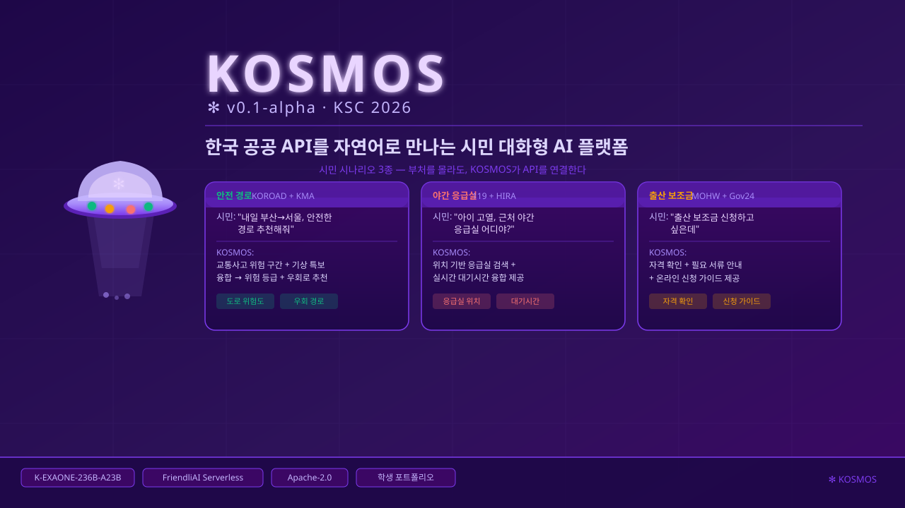
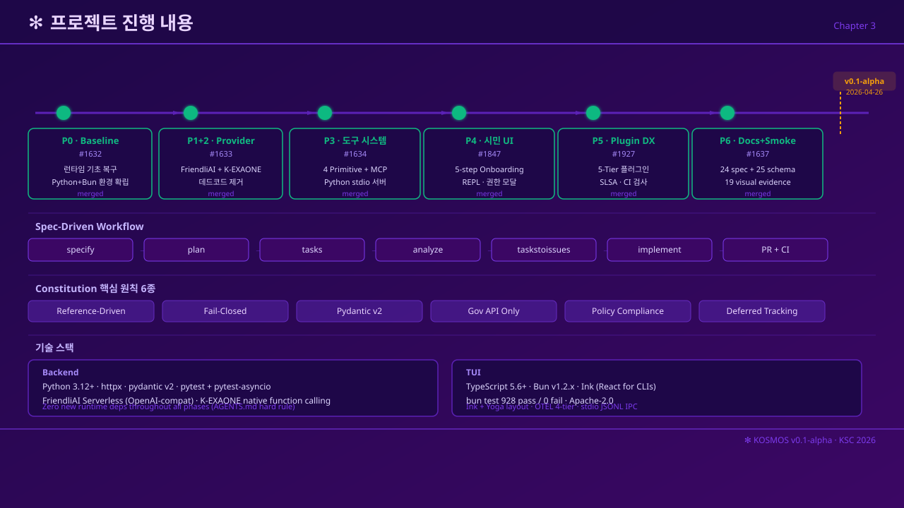
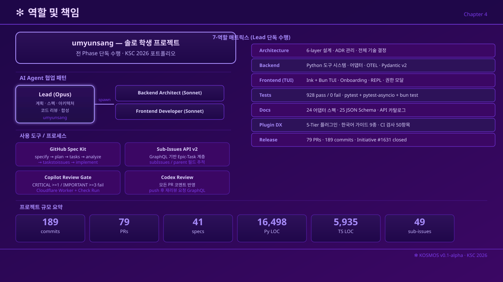
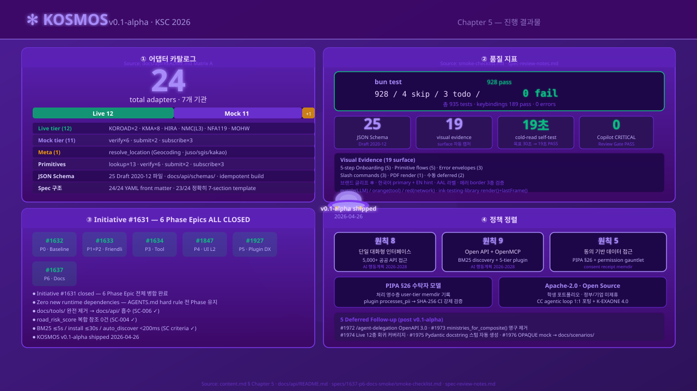
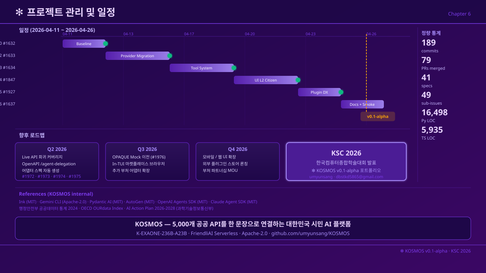

KOSMOS v0.1-alpha
시민 대화형 공공 API 하네스
umyunsang
2026-04-26
목차
KOSMOS 정의
Claude Code의 하네스를 한국 공공서비스 도메인으로 마이그레이션한
시민용 대화형 AI 플랫폼 —
data.go.kr의 5,000+ 분산 공공 API를 단일 대화 인터페이스로
시민 사용 시나리오
안전 경로
"내일 부산에서 서울 가는데, 안전한 경로 추천해줘"
KOROAD 사고 데이터 + KMA 기상 특보 + 도로위험지수 융합
야간 응급실
"아이가 열이 나는데 근처 야간 응급실 어디야?"
NFA119 응급정보 + HIRA 병원정보 융합 → 대기 시간
출산 보조금
"출산 보조금 신청하고 싶은데"
MOHW 복지 자격 + Gov24 신청 안내 → 필요 서류
하네스 마이그레이션
Claude Code의 하네스(tool loop · permission gauntlet · context assembly · TUI)는 "올바른 도구를 올바른 순서로 호출하는" 문제로 환원되는 모든 도메인에 적용 가능한 범용 substrate

6-Layer Architecture
LLM Stack
MODEL
K-EXAONE 4.0-32B
LGAI-EXAONE / FriendliAI Serverless
128K context · 한국어 KMMLU 72.7%
LOOP
CC agentic loop 1:1 보존
K-EXAONE native function calling
PRIMITIVES
lookup
submit
verify
subscribe
시장 현황
(2024년 말 기준)
2013년 5,272건 대비 19배 증가
(2024년 말)
2013년 대비 5,413배 증가
(2015·2017·2019·2023)
점수 0.91/1.0 · OECD 평균 0.48의 2배
문제: 10만 건 이상의 공공 API가 개방되어 있지만, 시민이 부처를 횡단하며 AI 기반으로 통합 활용할 수 있는 오픈소스 플랫폼은 존재하지 않는다. 기존 서비스(정부24 AI · CLOVA · 카카오 i)는 단일 도메인 안내 또는 규칙 기반 챗봇 수준에 머물러 있다.
출처: 행정안전부 공공데이터 개방 현황 (data.go.kr/data/15076332) · e-나라지표 (index.go.kr idx_cd=2844) · mois.go.kr
기존 서비스 비교
| 항목 | 정부24 AI | 네이버/카카오 | KOSMOS |
|---|---|---|---|
| 부처 횡단 | 제한적 | 파편화 | 완전 횡단 |
| LLM tool-loop | 미적용 | 미적용 | CC 1:1 포팅 |
| Permission gauntlet | 없음 | 없음 | 3-layer + Spec 033 |
| 플러그인 DX | 없음 | 없음 | 5-tier 오픈 생태계 |
| 오픈소스 | 아니오 | 아니오 | Apache-2.0 |
| 한국어 LLM | 범용 미정 | 자체 모델 | K-EXAONE 4.0-32B |

KOSMOS 차별점 4종
① 부처 횡단 agentic loop
CC의 tool-loop skeleton을 1:1 보존 — 단일 대화에서 KOROAD · KMA · HIRA를 동시 호출하는 부처 횡단 쿼리 지원
② PIPA §26 수탁자 모델
3-layer permission gauntlet + Spec 033 spectrum — 개인정보 처리 어댑터 전부 bypass-immune 게이트 통과 의무
③ 5-tier 오픈 플러그인 DX
Template · Guide · Examples · Submission · Registry — 외부 기여자가 30분 안에 신규 공공 API 어댑터 등록 가능
④ Apache-2.0 오픈소스
전체 스택 공개 (Python 백엔드 + TypeScript TUI) — 연구·재현·기여 완전 허용 학생 포트폴리오
배경 출처 — AI 행동계획(2026-2028): msit.go.kr · smartcity.go.kr | CLOVA Chatbot: gov-ncloud.com | 카카오 i: dktechin.com | 정부24 AI: etnews.com/20251217000077
6 Phase 마이그레이션

Spec-driven Workflow
- 스펙 없이 코드 작성 금지 (AGENTS.md hard rule)
- 41개 spec 디렉터리 (
specs/) 버전 관리 - PR 본문:
Closes #EPIC만 등록 (Task sub-issue 미포함) - 커밋 전
uv run pytest의무
Agent Teams
| 역할 | 에이전트 | 모델 |
|---|---|---|
| 아키텍처·스펙·리뷰 | Lead | Claude Opus |
| 백엔드 구현·테스트 | Backend Architect | Claude Sonnet |
| TUI/CLI 구현 | Frontend Developer | Claude Sonnet |
| 테스트 작성 | API Tester | Claude Sonnet |
| 코드 리뷰 | Code Reviewer | Claude Opus |
| 보안 검토 | Security Engineer | Claude Sonnet |
3개 이상 독립 Task → Agent Teams 병렬 실행
1-2개 또는 결합 Task → Lead 단독
Constitution 6 Principles
각 /speckit-analyze 단계에서 검증하는 아키텍처 준수 원칙
docs/vision.md 또는 Claude Code 소스맵 인용 후 정당화requires_auth=True, is_personal_data=True 기본값 — 명시 override 없이 공개 불가Any 타입 사용 금지data.go.kr API 호출 금지 — 라이브 테스트는 @pytest.mark.live 격리
솔로 학생 프로젝트
단독 개발자 umyunsang이 Lead 역할을 수행하며, Opus/Sonnet 에이전트를 지시·검토·합성하는 AI-assisted solo development 모델
- 아키텍처 설계 — docs/vision.md · migration-tree 승인
- Spec 작성 — 41개 spec 디렉터리 전부 직접 검토
- PR 리뷰 — Copilot Gate + Codex Review 이중 검증
- 이슈 계층 관리 — GraphQL Sub-Issues API v2 직접 운영
- 정책 정렬 — PIPA §26 · AI Action Plan 해석 책임
Lead Opus + Teammates Sonnet 위임 패턴
Lead — Claude Opus
- Epic spec 작성 · plan 검토
- 아키텍처 결정 · ADR 승인
- Constitution 준수 검증
- PR 코드 리뷰 · merge 판단
Teammates — Claude Sonnet
- 백엔드 어댑터 구현
- TUI 컴포넌트 포팅
- 테스트 작성 (pytest · bun test)
- 문서 작성 (docs/api/)
/speckit-implement 단계에서만 Agent Teams 병렬 dispatch —
3개 이상 독립 Task는 Sonnet Teammates에게 위임.
각 Teammate는 별도 컨텍스트에서 실행되며, Lead가 산출물을 합성·리뷰한 후 PR에 통합.
모든 코드 변경은 단일 통합 PR로 병합 (bun test 통과 확인 후).
정량 결과
KOROAD · KMA × 6 · HIRA · NMC · NFA119 · MOHW — 실제 data.go.kr endpoint 호출
verify × 6 · submit × 2 · subscribe × 3 — 공개 스펙 기반 fixture-replay
resolve_location — Geocoding meta-tool
25 JSON Schema Draft 2020-12 (docs/api/schemas/) ·
keybindings 189 pass ·
30초 cold-read 실제 19초 (SC-007 PASS)

6 Phase Epics Closed · 5 Deferred 후속
| Phase | Epic | 주요 산출물 | 핵심 지표 |
|---|---|---|---|
| P0 | #1632 | CC 2.1.88 runtime 복구 | 컴파일 성공 |
| P1+P2 | #1633 | dead-code 제거 + FriendliAI 전환 | provider 단일화 |
| P3 | #1634 | 4 primitive + 13-tool registry | Spec 031 완성 |
| P4 | #1847 | 5-step onboarding + REPL + Permission + Agents | TUI CC 90% 포팅 |
| P5 | #1927 | 5-tier plugin DX + PIPA §26 gate | 50-item validation |
| P6 | #1637 | 24 어댑터 spec + 25 schema + 19 visual | bun test 0 fail |
Deferred 5종 (후속 사이클)
정책 정렬
Korea AI Action Plan (2026-2028)
원칙 8 — 단일 대화형 인터페이스
5,000+ 공공 API를 단일 대화 창구로 — KOSMOS 핵심 미션 직접 대응
원칙 9 — Open API + OpenMCP
BM25 discovery + 5-tier 플러그인 DX — 오픈 생태계 구조 정렬
원칙 5 — 동의 기반 접근
PIPA §26 수탁자 모델 + permission gauntlet receipt ledger
PIPA §26 수탁자 모델
수탁자(Trustee) 기본 해석
LLM 합성 단계만 controller-level carve-out — 나머지 전부 수탁자 책임
처리 영수증 기록
~/.kosmos/memdir/user/consent/ 영구 보존
Plugin SHA-256 Gate
processes_pii: true 시 CI SHA-256 trustee acknowledgment 강제 검증
타임라인 & 통계
| Phase | 커밋 | 주요 특징 |
|---|---|---|
| P0 | 7 | CC 2.1.88 컴파일·런타임 복구 |
| P1+P2 | 27 | 94개 파일 변경, -25,263 라인 삭제 |
| P3 | 9 | 4 primitive + stdio MCP 13-tool surface |
| P4 | 15 | 51 tasks, 279 tests, 26 surface 검증 |
| P5 | 29 | 50-item 검증 매트릭스, PIPA §26 집행 |
| P6 | 15 | 24 API spec + 25 schema + 19 TUI surface |

협업 도구 · 거버넌스
| 범주 | 도구 |
|---|---|
| 이슈 관리 | GitHub Issues + Sub-Issues API v2 |
| 사양 관리 | GitHub Spec Kit (.specify/) |
| CI/CD | GitHub Actions (pytest + bun test) |
| 관찰성 | 4-tier OTEL + 로컬 Langfuse |
| 비밀값 | Infisical OIDC (Project de83ba22) |
| 패키지 | uv (Python) · bun (TUI) |
Copilot Review Gate
- Cloudflare Worker → GitHub Check Run
- CRITICAL ≥ 1 → fail · IMPORTANT ≥ 3 → fail
- PR merge 전 gate passed 필수
Codex Review
- chatgpt-codex-connector PR 인라인 리뷰
- Copilot Gate와 병행 이중 검증
Zero new runtime dependencies 원칙 — 마이그레이션 전 단계에서 AGENTS.md hard rule 유지. Zero CRITICAL Copilot Review Gate findings — PR #1977 merge 조건 (SC-008 PASS).
향후 로드맵
이슈 계층 Initiative → Epic → Task는 GitHub Sub-Issues API v2(GraphQL)로 추적. Epic당 Task 최대 90개 예산. 6개 마이그레이션 Epic = 44 Task + 5 Deferred (합계 49 서브이슈).
핵심 메시지
① Claude Code의 하네스는 도메인-무관 substrate다.
tool loop · permission gauntlet · context assembly · TUI를 1:1 보존하고 도구 표면만 교체하면 공공 AI 하네스가 된다.
② 15일, 189 커밋, 24 어댑터, 935 테스트 — 0 fail.
Spec-driven + Agent Teams 방법론으로 학생 솔로 프로젝트가 6 Phase 마이그레이션을 완주했다.
③ Korea AI Action Plan 원칙 8/9 + PIPA §26 정렬.
정책 기반 공공 AI 하네스로서 재현 가능하고 기여 가능한 오픈소스(Apache-2.0) 참조 구현.
Q & A
GITHUB
github.com/umyunsang/KOSMOS
dbstkd5865@gmail.com
LICENSE
Apache-2.0
Not affiliated with Anthropic, LG AI Research, or the Korean government.
Student portfolio project. KSC 2026 submission.